I built a handwriting engine in JavaScript that converts text into controllable paths and have used it in multiple physical and web-based works.
I've integrated this with procedural text generation, exploring the gap between meaning and nonsense, in a space conceptually and technically adjacent to LLMs.
I've integrated this with procedural text generation, exploring the gap between meaning and nonsense, in a space conceptually and technically adjacent to LLMs.
Defining the letters
Each letter is defined by a small number of points, which means the file size for the handwriting code is relatively small and defining new characters is quick.The points are curved into smooth paths using Chaikin's curve algorithm and then turned into a shape, so they can have varied width.
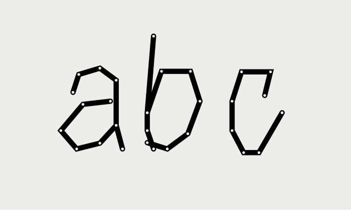
Letter paths
Curve algorithm on a simple path
I created a tool to define letters quickly, by clicking out paths and exporting point positions as an array.
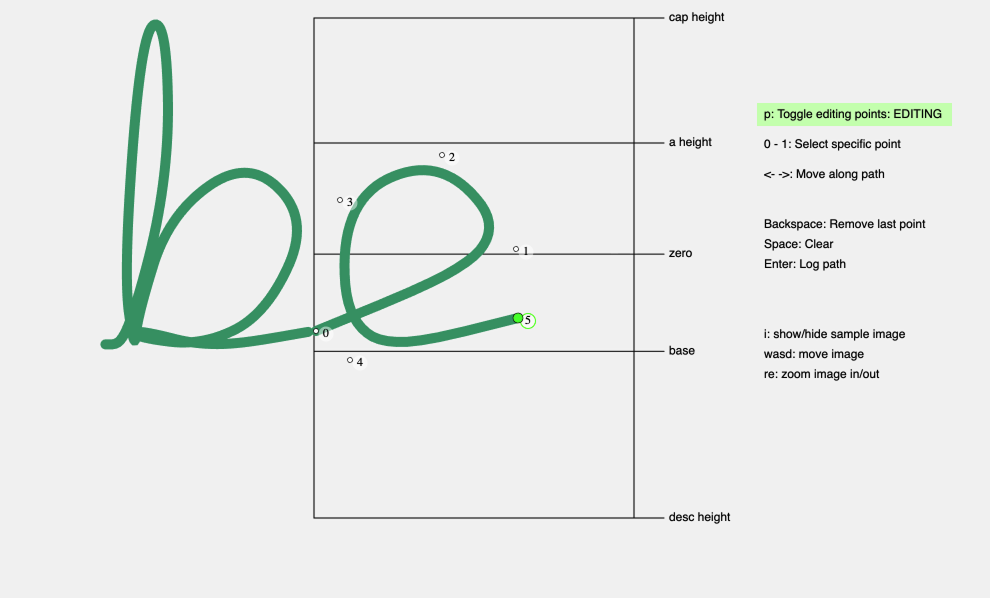
Letter tool
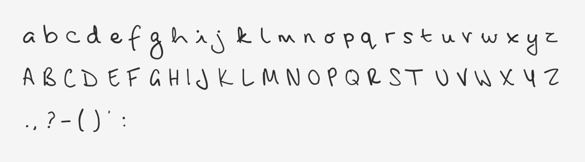
Curved letter paths
Ligature logic
Some pairs of letters can be easily joined, simply by connecting the last point of one letter to the first point of the next, while others do not automatically work nicely.Here are two examples of problematic letter pairs, creating a path through the centre of the "a" and a bump between the "t" and "i".
Problematic letter pair "na"
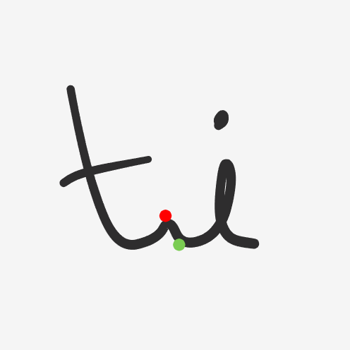
Problematic letter pair "ti"
I assigned each letter one of four join types for the beginning and end of the path - no join, baseline, just above baseline and x-height. Then, where necessary, I gave each letter rules for how it should join to the other join types.
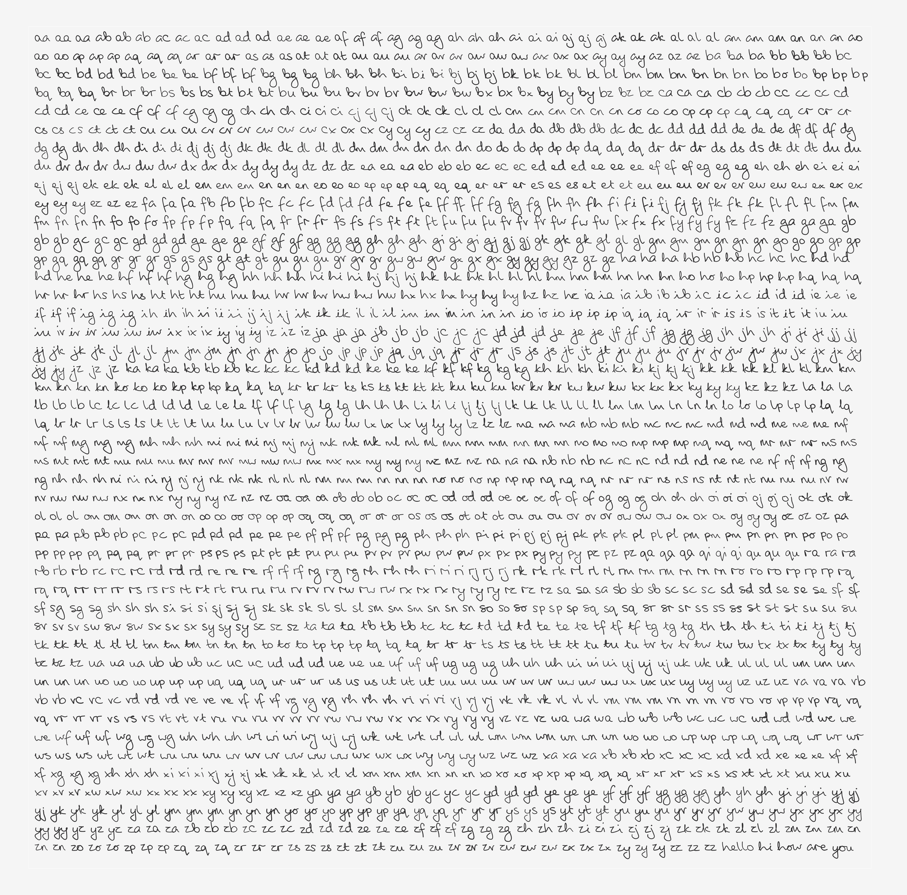
Testing letter pairs

A side by side comparison of my handwriting with the coded version, drawn by an Axidraw plotter
Meaningful nonsense
The text content is generated using a grammar-based sentence structure system, which makes use of modular components, curated word lists and randomness to produce coherent but ambiguous phrases.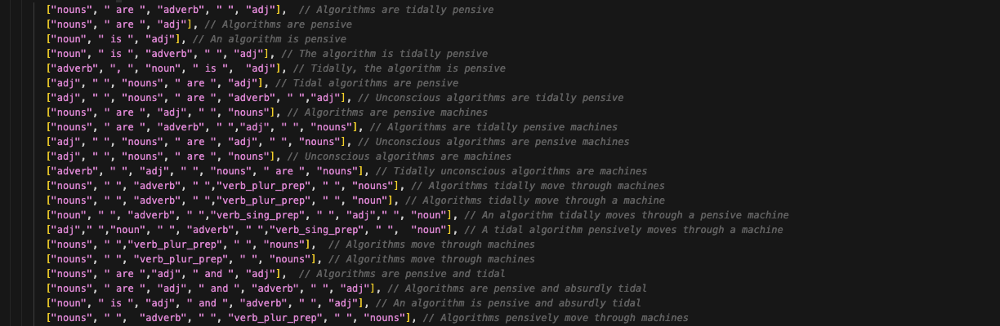
Example sentence structures
Messages and artworks
This handwriting system continues to show up in my artwork.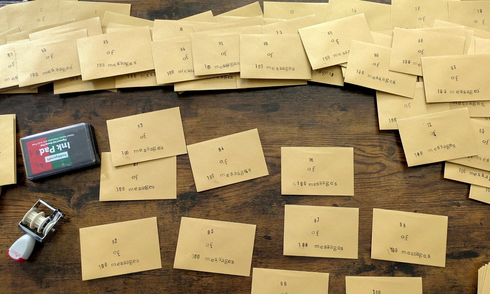
100 Messages
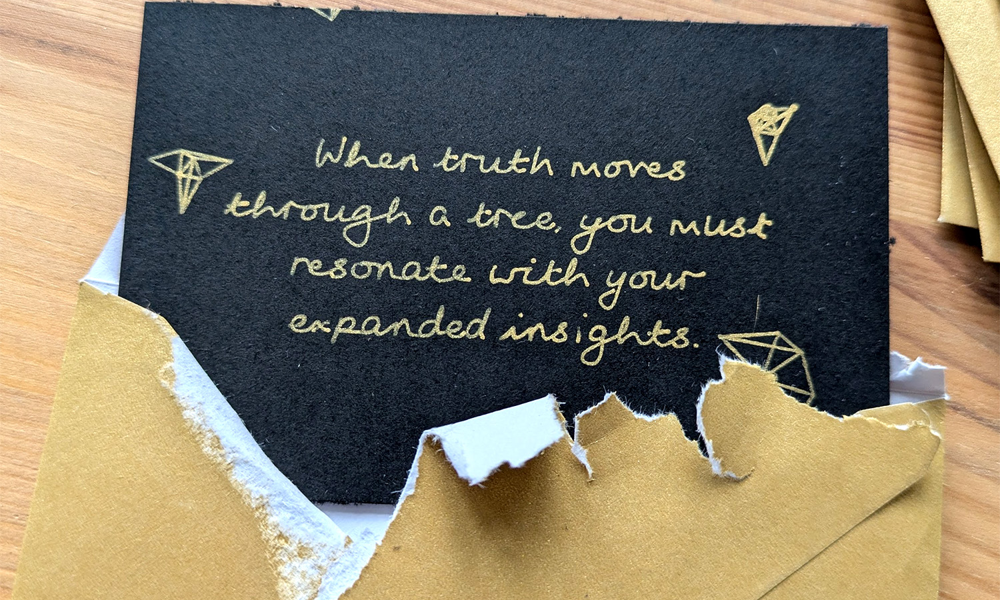
100 Messages
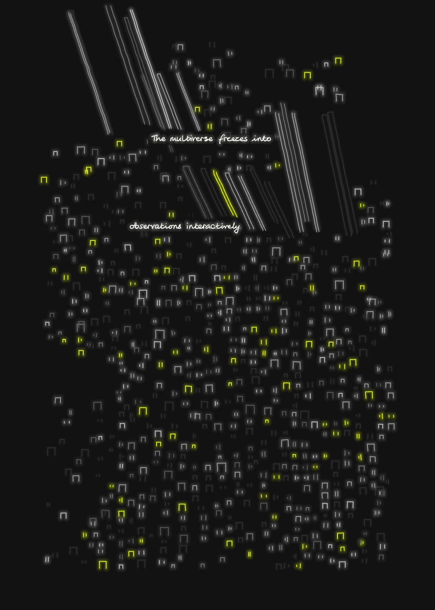
A Message Drifts
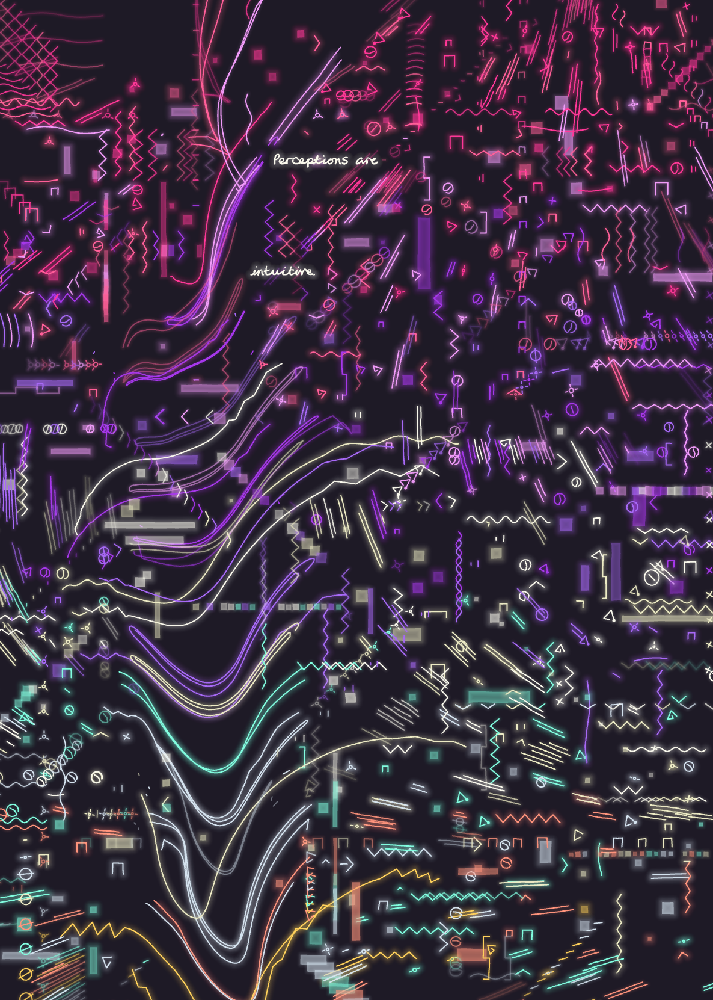
A Message Drifts
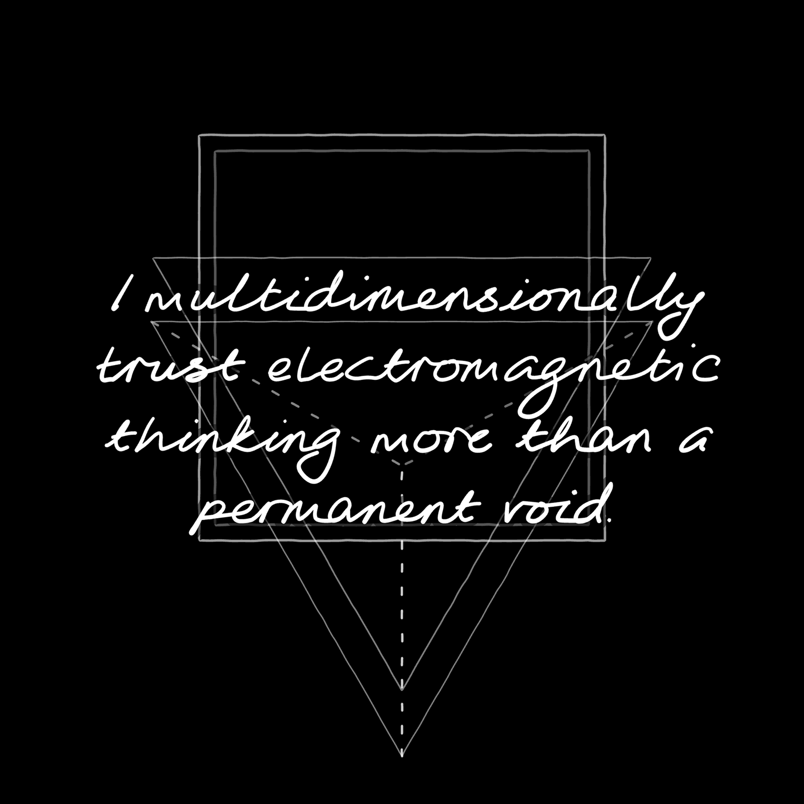
Work in progress
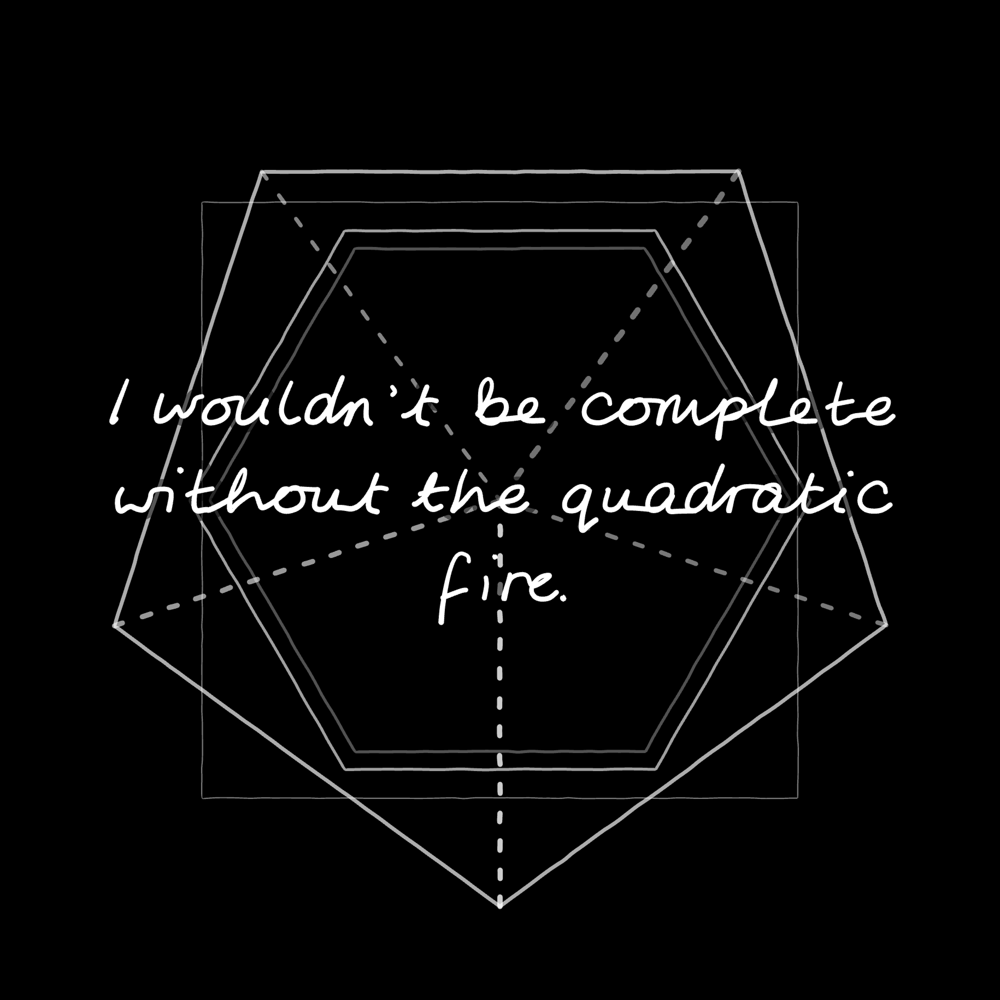
Work in progress